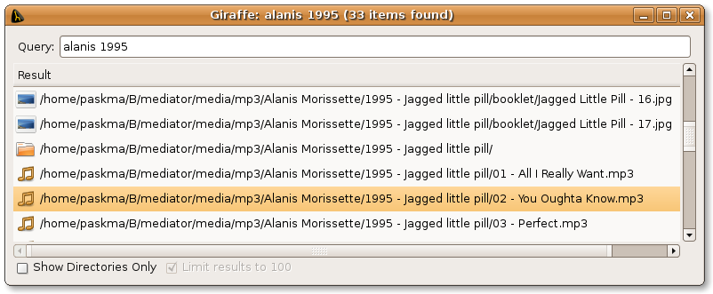

Quick and dirty filesystem indexer written in Python. GUI is provided by GTK.
First extract files from archive:
tar xvzf giraffe-0.1.0.tgz
Create index of interested locations.
cd giraffe python makeindex.py /data/mp3 /data/ebooks
You can use simple command-line interface.
python query.py alanis ironic
And run GUI.
python mainform.py
